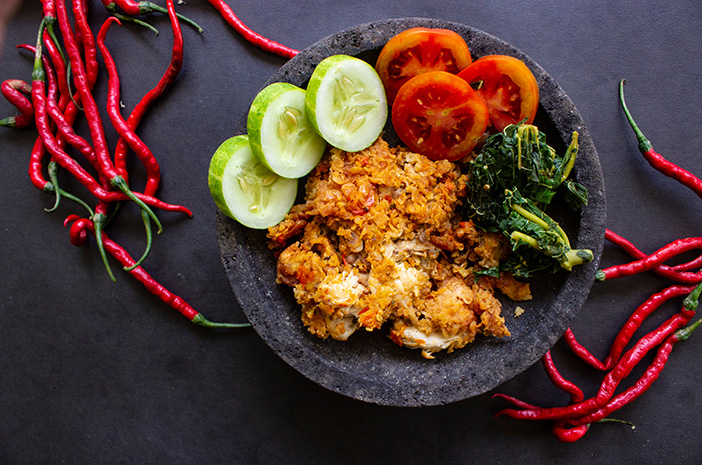

Ayam geprek is a traditional Indonesian chicken dish originating from Yogyakarta in Java. The dish is similar to American fried chicken, and it's usually made with a combination of chicken, eggs, flour, paprika, salt, pepper, oil, and sambal. The chicken is sliced, seasoned with salt and pepper, dredged in flour, dipped in beaten eggs, and fried in oil until golden and crispy.
Meal prep time : 1 hour 20 minutes
Servings : 5